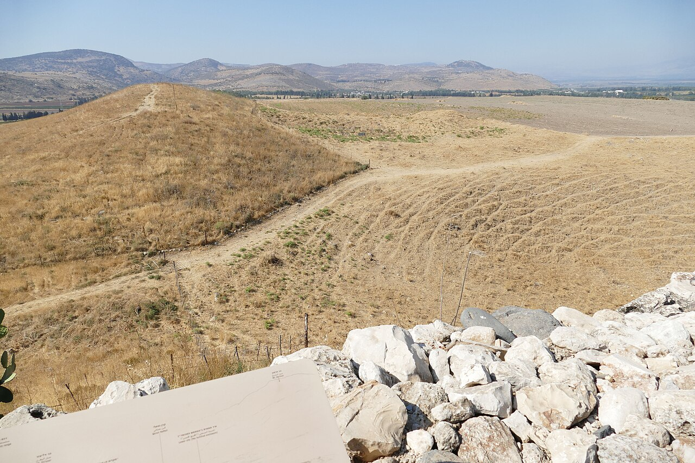

Hazor

- Find Name
- Hazor
- Historical Period
- Iron Age II
- Artifact Date
- c. 13th-9th century BC
- Date Discovered
- 1955
- Discovery Location
- Tel Hazor, Israel
- Current Location
- In situ, Tel Hazor National Park, Israel; Israel Museum, Jerusalem
- Timeline Era
- United Monarchy
- Description
- The largest biblical-period mound in Israel, excavated by Yigael Yadin in 1955-58, revealing a great Late Bronze Age city with temples and royal buildings, a destruction layer by fire, and a six-chambered gate like Megiddo's. Hazor was 'head of all those kingdoms' in Joshua's day and was fortified again in the monarchy period.
- Biblical Significance
- Hazor's burned Bronze Age layer fits its biblical description as the one northern city Joshua burned, though the exact dating and identity of its destroyers are debated. Together with its Solomonic-era gate, Hazor spans the story from conquest to kingdom, showing God's people planted in a land of real cities and real kings.
- Evidence Class
- Contextual
- Interpretations
- Scholars debate Hazor’s Solomonic gate and the extent of its tenth-century fortifications, as with Megiddo; the city’s importance in Joshua and Judges is not in doubt, but which stones are Solomon’s is.
- Scripture Illuminated
- Related People
- Related Books
- Related Events
Awaiting Review Not yet checked against scholarly sources. Treat its claims as provisional until this entry is reviewed. About verification
Last reviewed: not yet reviewed